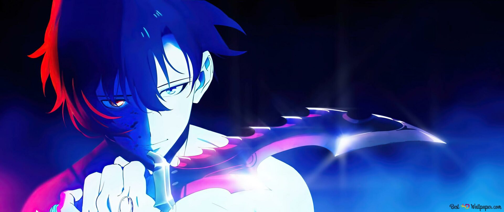

Description
Solo Leveling

- Solo Leveling (나 혼자만 레벨업) is a Korean web novel written by Chu-Gong (추공).
- In a world where hunters, human warriors who possess magical abilities, must battle deadly monsters to protect mankind from certain annihilation.
- A notoriously weak hunter named Sung Jinwoo finds himself in a seemingly endless struggle for survival.
- a mysterious program called the System chooses him as its sole player and in turn, gives him the extremely rare ability to level up in strength, possibly beyond any known limits.